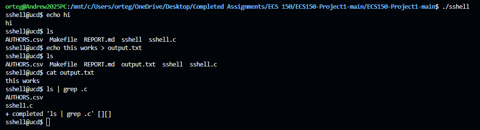

Key Features
- Execution of standard shell commands via
execvp - Built-in commands:
cd,pwd,exit,sls - Pipelining of up to 4 commands using
| - Output redirection (
>) and append redirection (>>) - Custom command
slsto display file sizes
I built a Unix-style command-line shell in C capable of executing standard commands, handling piping across multiple processes, and supporting both input and output redirection. The project focused on low-level systems concepts such as process creation, file descriptors, and inter-process communication.
execvpcd, pwd, exit, sls|>) and append redirection (>>)sls to display file sizesThis project strengthened my understanding of how operating systems manage processes and how programs communicate through pipes. It also gave me hands-on experience with parsing input, handling edge cases, and managing system resources safely.
Input commands were parsed using tokenization techniques to separate arguments, pipes, and redirection operators. A linked list structure was used to represent chained commands in pipelines, allowing flexible execution of multi-step operations.
Commands were executed using forked child processes and execvp.
Pipes and file descriptors were used to redirect input/output streams,
enabling communication between processes in a pipeline.
The shell handles parsing errors, invalid commands, and system call failures. Input validation ensures commands are properly structured before execution, improving reliability and preventing crashes.
Dynamically allocated memory for command structures and pipes was carefully managed and freed after execution to prevent memory leaks.
One of the main challenges was correctly handling multiple levels of piping and ensuring that each process received the correct input and output streams. Managing file descriptors across multiple processes required careful coordination to avoid unintended behavior.
The shell supports command execution, file system interaction, output redirection, and command piping. The example below demonstrates creating a file, verifying its contents, and chaining commands using pipes.

Demonstrates:
echo this works > output.txt (redirection),
cat output.txt (verification), and
ls | grep .c (pipelining across processes).
Source code is available upon request due to academic collaboration constraints. The project was tested against a reference shell to ensure consistent behavior across a variety of commands.